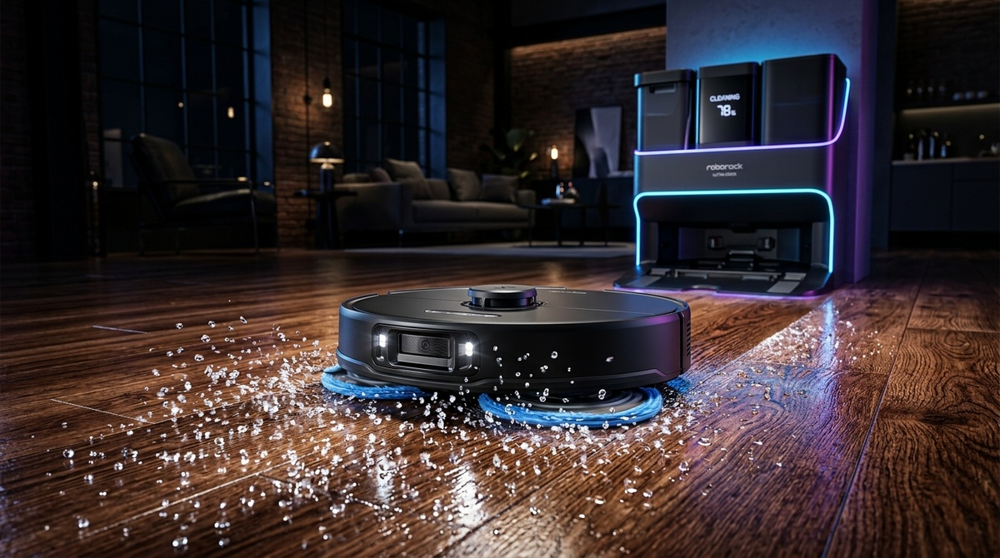
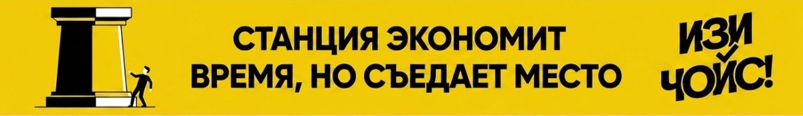
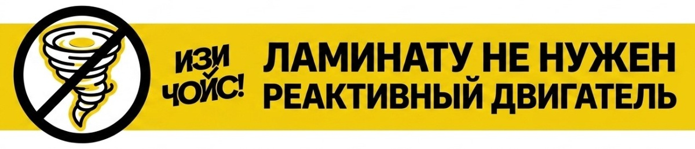
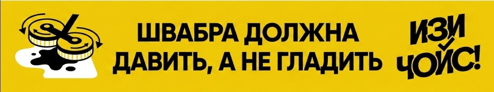
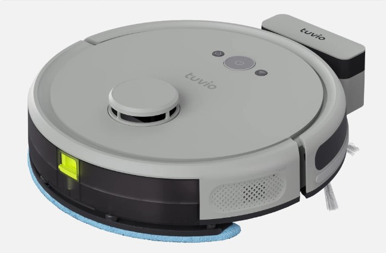
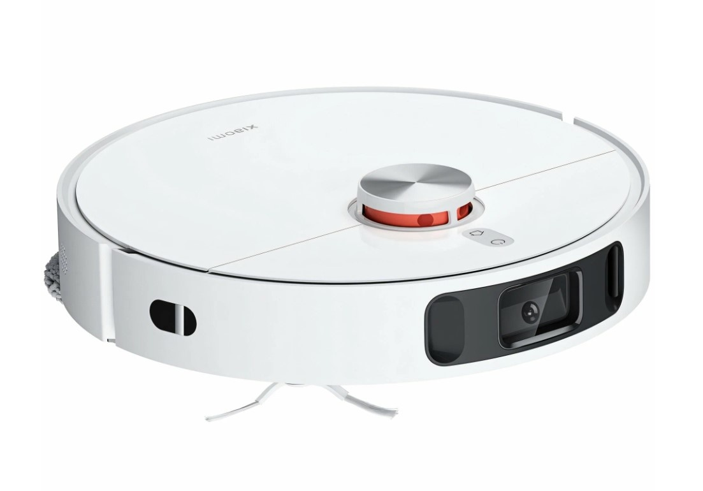
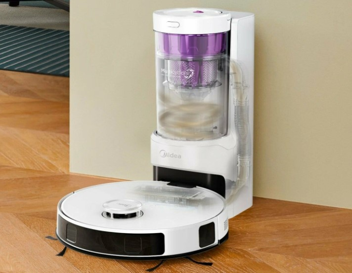
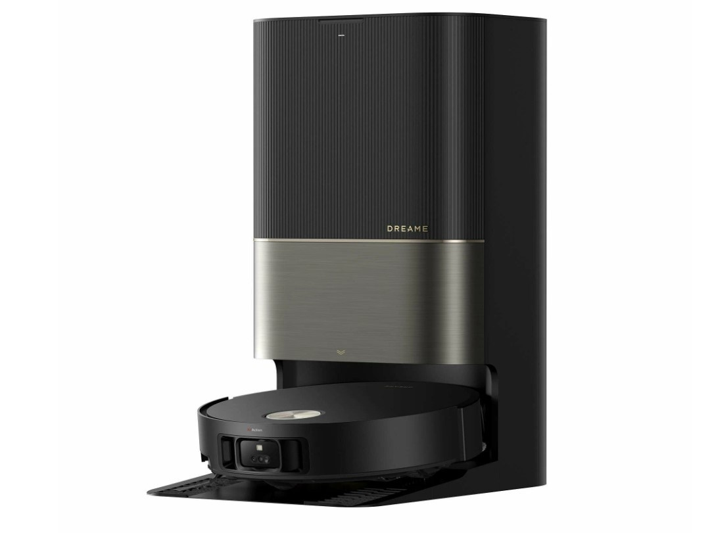
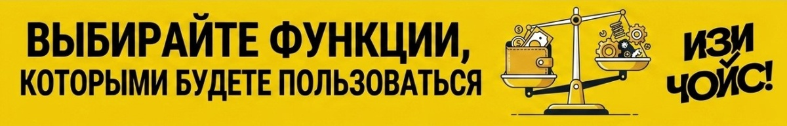

← На главную
Свежий рейтинг роботов пылесосов 2026. Топ моделей по уровням.
10 июня
👁️ 15
⏱️ 3 мин
Рынок домашних гаджетов в 2026 году перенасыщен: сотни брендов выпускают новые модели каждый месяц. Разобраться в этом хаосе характеристик, мощностей и насадок — задача не из простых.
Команда «ИЗИ ЧОЙС!» провела десятки тестов, изучила реальные отзывы покупателей и готова поделиться выжимкой: на что действительно стоит обращать внимание, а что — лишь маркетинг, вытягивающий деньги из вашего кошелька.

Нюанс №1: Станция самоочистки — не панацея, а место в шкафу
Станция самоочистки, безусловно, удобная вещь. Она сама забирает мусор, доливает воду и даже стирает салфетки. Но есть огромное «Но» — габариты и обслуживание.
Такая станция занимает много места, а воду в ней менять все равно нужно вам. И если забыть вылить грязную воду, запах будет стоять на всю квартиру.

ИЗИ-правило: Решайте сами, что для вас важнее: сэкономить 5 минут на очистке контейнера или сохранить квадратный метр пространства в небольшой квартире. Для студий лучше брать компактные модели.
Нюанс №2: Сумасшедшая гонка мощности
Производители соревнуются в цифрах: 5000 Па, 8000 Па, 10000 Па. Обывателю кажется, что чем больше, тем лучше.
На практике для гладких покрытий (ламинат, линолеум, плитка) вполне достаточно 2500-3000 Па. Все, что выше, нужно только для ковров с длинным ворсом. Переплачивать за лишние Паскали, если у вас дома везде ламинат, — бессмысленно.

ИЗИ-правило: Оценивайте свои покрытия. Если ковров нет, базовая мощность справится на 100%.
Нюанс №3: Бестолковая салфетка — не мокрая тряпка
Модели, которые просто таскают за собой влажную салфетку, не отмоют засохшие пятна. Это лишь легкое протирание от пыли. Если вам нужна реальная влажная уборка, ищите модели с вращающимися дисками (швабрами) или вибрирующими платформами. Они создают давление и действительно оттирают грязь.

ИЗИ-правило: Если нужна влажная уборка — только ротационные диски или вибрирующие панели. Статичная салфетка — это баловство.
Главный рейтинг «ИЗИ ЧОЙС!»: Кого брать в 2026 году?
Мы отобрали лучшие роботы-пылесосы в разных ценовых категориях, чтобы вы сделали правильный выбор.
1. Уровень «Разумный минимум» — Tuvio TR02MLBW (Лучший среди бюджетников)

- Идеален для небольших квартир без ковров. Отличная навигация за счет лидара, строит точную карту помещения.
- Базовая влажная уборка и достаточная мощность всасывания (робот выдает оптимальные 2600 Па, чего вполне хватит для поддержки чистоты, а аккумулятора на 3200 мА·ч достаточно для уборки до 80 кв.м.).
- Проверенный бренд с доступными расходниками (фильтры, щетки).
- Идеальное соотношение цены и качества для тех, кто покупает свой первый робот-пылесос.
2. Уровень «Золотая середина» — Xiaomi Robot Vacuum X10+ (Хит продаж с крутой станцией)

- Полноценная станция самоочистки (стирает и сушит швабры, забирает мусор).
- Вращающиеся диски для качественной влажной уборки. Отлично справляется с пятнами на кухне.
- Продвинутая навигация с распознаванием предметов (проводов, игрушек, носков) на полу. Технологичная RGB-камера и 3D-датчики делают его навигацию образцовой, а мощность 4000 Па не оставляет шанса пыли на ковриках.
- Надежность экосистемы Xiaomi и удобное приложение на русском языке.
3. Уровень «Мастер клининга» — Midea VCR S20 Plus (Король влажной уборки без переплат)

- Отличается наличием D-образной формы, лучше выметает мусор из углов.
- Вращающиеся диски и мощная батарея. Хватает на большие площади: батарея емкостью 5200 мА·ч обеспечивает до 180 минут работы, а мощность всасывания достигает серьезных 5000 Па.
- Станция самоочистки компактнее, чем у конкурентов, но требует ручной стирки салфеток.
- Отличный выбор для тех, кому в первую очередь важна чистота полов и нет желания переплачивать за сушку тряпок.
4. Уровень «Ультра, Премиум, Деньги не проблема» | Dreame X50 Ultra (Робот будущего)

- Выдвижная боковая швабра (технология MopExtend), которая моет пол вплотную к плинтусам, не оставляя слепых зон.
- Огромная мощность (фантастические показатели всасывания) и способность мыть швабры горячей водой прямо на станции.
- Робот сам отсоединяет швабры на станции, если нужно пропылесосить высокий ковер.
- Полный фарш технологий: камера с видеосвязью, голосовой ассистент, подсветка в темноте.

Резюме и финальный аккорд от «ИЗИ ЧОЙС!»
Не ведитесь на маркетинговые уловки. Выбирайте робот-пылесос под свои нужды:
ЧЕК ЛИСТ ПЕРЕД ПОКУПКОЙ:
- Оцените площадь: для 40 кв.м. не нужна огромная станция. Для 100 кв.м. — обязательна, иначе замучаетесь бегать с контейнером.
- Есть ли ковры? Нет ковров — берем базовую мощность. Есть ковры — смотрим от 4000 Па.
- Нужна ли влажная уборка? Да — берем ротационные диски. Нет — берем классическую салфетку.
- Навигация: только LDS (лидар). Роботы с камерой на бампере (без башенки) часто теряются.
Делайте свой ИЗИ ЧОЙС! 💡 Пусть техника работает на вас, а не вы на неё.
Ссылки на проверенные модели:
Теги: #роботпылесос #уборка #умныйдом #изичойс #бытоваятехника #обзор #рейтинг